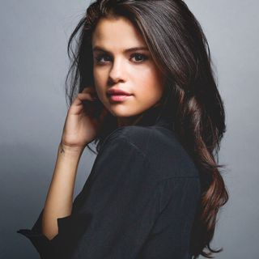

44,756,978 Monthly Listeners

Selena Gomez
About Artist
In the late aughts, Selena Gomez started her career as a teenage actress starring in a hit Disney Channel series. However, she soon showed that her musical talents were perhaps even stronger, as she piled up hit singles such as "Come & Get It," "Good for You," and "Same Old Love" from her first two chart-topping albums. Initially, she broke from her child actress mold with the pop/rock band Selena Gomez & the Scene, issuing a trio of albums from 2009 to 2011. After going solo, she scored a pair of number ones with Stars Dance (2013) and Revival (2015), before continuing her reinvention as a cool electronic pop vocalist with chart-climbing collaborations with Kygo ("It Ain't Me") and Marshmello ("Wolves").
Born in 1992, she grew up in Texas and got her first break as a cast member on the kids' TV show Barney and Friends. Gomez landed minor roles in several other TV programs, but it was her affiliation with the Disney Channel -- who discovered her during a nationwide talent search in 2004 -- that officially jump-started her acting career. Guest appearances on The Suite Life of Zach and Cody and Hannah Montana paved the way for Gomez's own show, The Wizards of Waverly Place, which premiered in October 2007 and quickly became one of the network's most popular programs. Gomez began juggling her commitment to The Wizards of Waverly Place with additional projects, including movie roles and a burgeoning singing career.
Gomez began branching out into pop music by recording songs for her own Disney projects. She sang the theme song for The Wizards of Waverly Place, recorded several other tunes for the the show's soundtrack, and performed on the soundtrack of the family film Another Cinderella Story. By 2009, she'd also assembled her own teen pop band, Selena Gomez & the Scene, and signed a contract with Hollywood Records. The band's full-length debut, Kiss & Tell, was released that year and went gold, as did its 2010 follow-up, A Year Without Rain. Gomez continued filming The Wizards of Waverly Place and made her theatrical debut in the 2010 film adaptation of Ramona and Beezus, but her music garnered just as much attention.
When The Wizards of Waverly Place started airing its final season in November 2010, Gomez shifted her attention back to her band, whose third album, When the Sun Goes Down, was recorded in early 2011 and released later that year. She then took a break from music to focus more on acting, with her first role in a decidedly adult movie in 2013's Spring Breakers showing she could stretch beyond teen stardom. Her return to music in 2013 with her fourth album -- but the first credited to her as a solo artist -- also showed some stretching as she added dubstep, R&B, and EDM to her sound. Stars Dance was released in July of 2013 and debuted at number one on the Billboard 200. The rest of that year was a bit challenging for her, as she fired her management team and parted ways with Hollywood Records. She soon bounced back, though, and scored a deal with Interscope. One last Hollywood album, a contract-fulfilling hits collection titled For You, was released in late 2014 and featured the self-penned platinum single "The Heart Wants What It Wants."
In early 2015, Gomez guested on Zedd's hit EDM single "I Want You to Know." On the heels of that success, she released her own single, the Sir Nolan- and Nick Monson-produced "Good for You," which featured a guest appearance by the song's co-writer, rapper A$AP Rocky. The song featured on the 2015 album Revival, her first for Interscope. With production by Mattman & Robin, Hit-Boy, and Benny Blanco, among others, and songwriting credits for Charli XCX, Julia Michaels, and Chloe Angelides, the album had many collaborators. Gomez executive produced, though, and shared writing credits on six songs, making it her most personal effort to date. It entered the Billboard 200 at the top and spawned three number one singles on the Top 40 chart, making Gomez the sixth female artist to have at least three songs from the same album top the chart since 1992. While touring in support of Revival, Gomez cut the trek short to address personal health problems stemming from her lupus, later revealing that during her time away from the spotlight she underwent a kidney transplant.
Re-emerging at the end of 2016, she was soon featured on a pair of singles by electronic dance artists Kygo ("It Ain't Me") and Marshmello ("Wolves"), both charting in the Top 20 of the Billboard Hot 100 in 2017. She also issued the solo singles "Bad Liar" and "Fetish" featuring rapper Gucci Mane. In 2018, she contributed the single "Back to You" to the 13 Reasons Why: Season 2 soundtrack and joined with DJ Snake, Cardi B, and Ozuna on "Taki Taki." ~ Matt Collar & Andrew Leahey